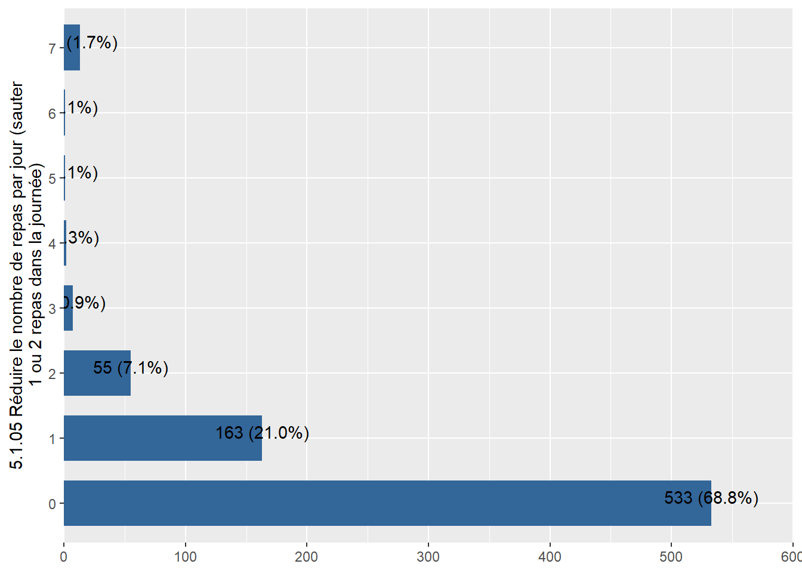
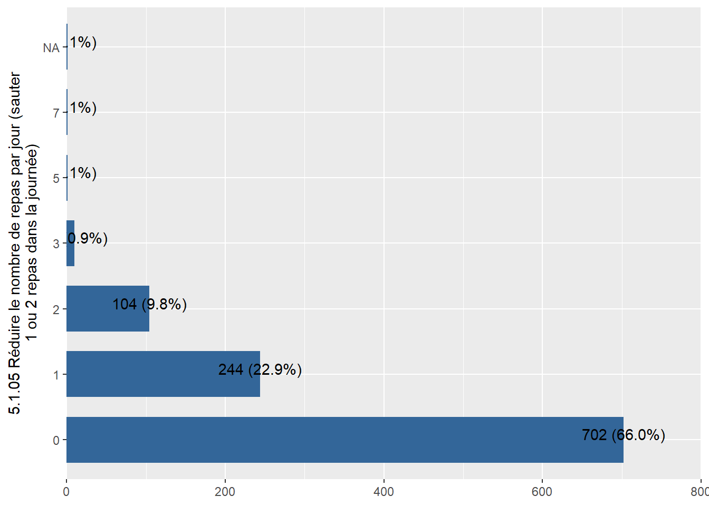
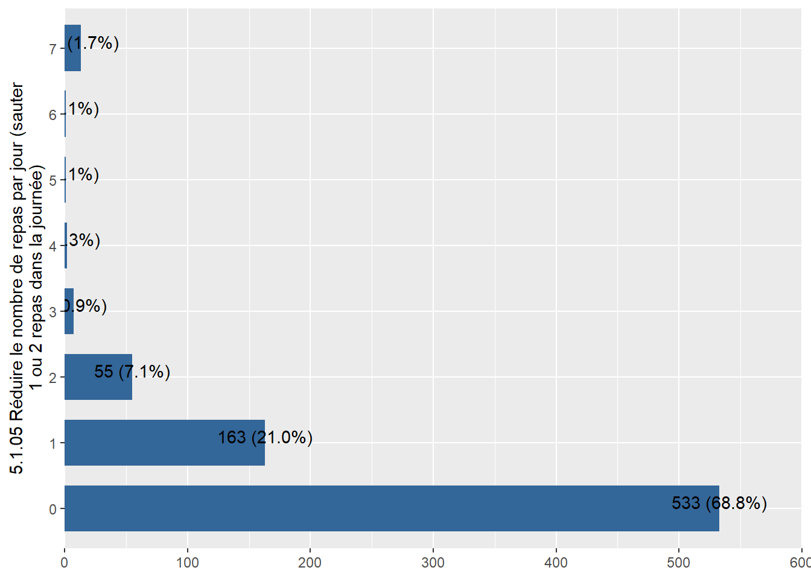
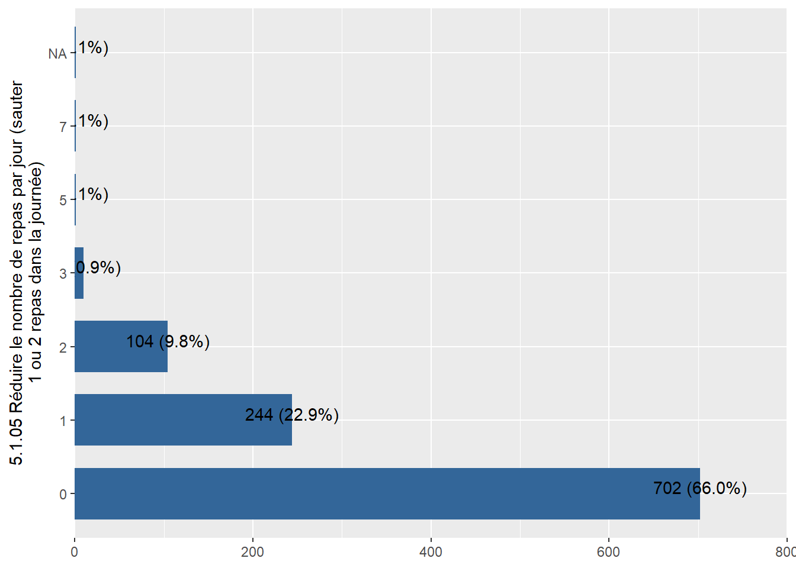
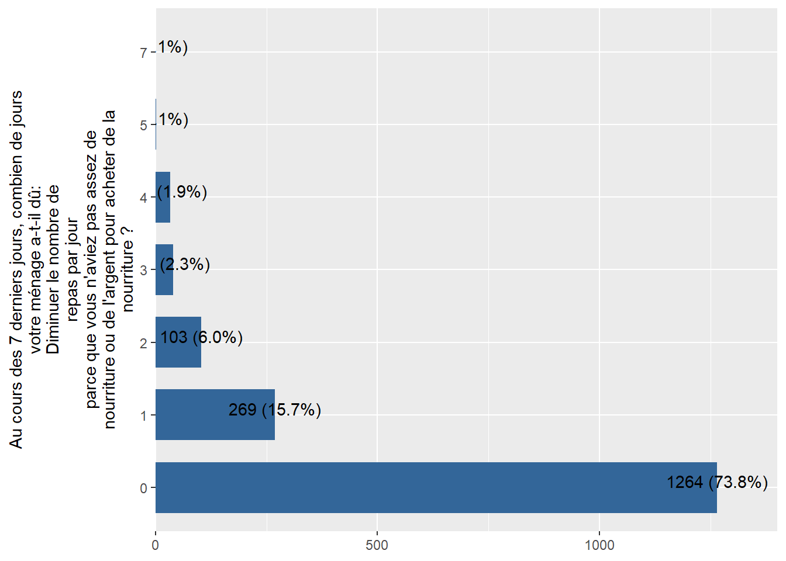
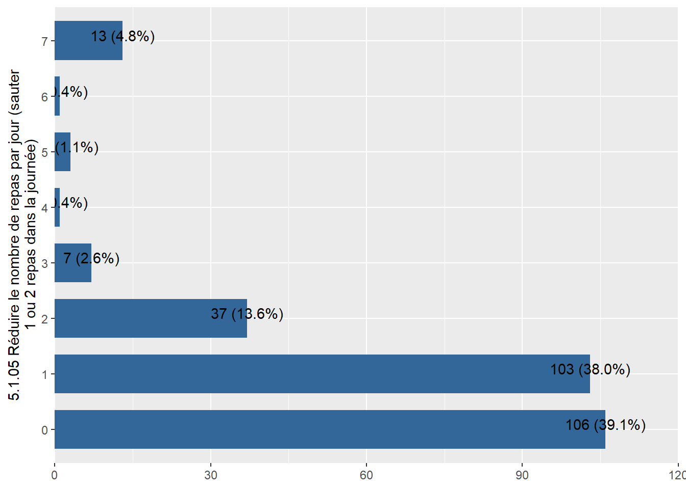
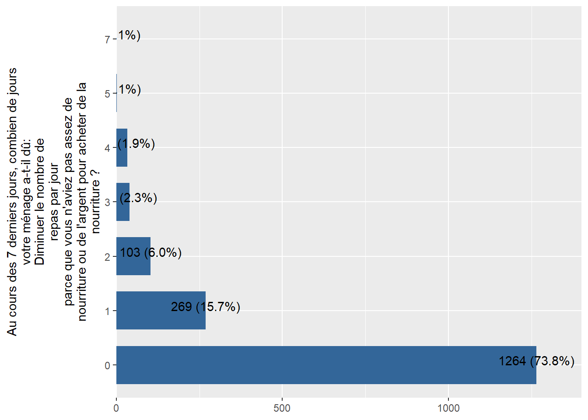
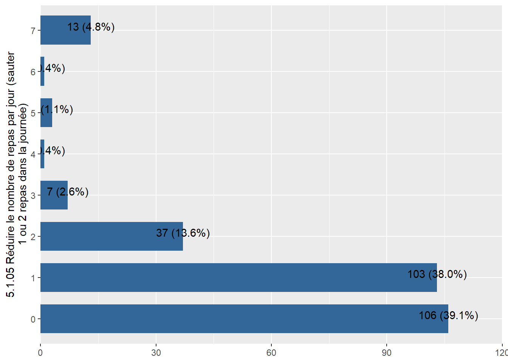

7 Reduced coping strategy index ou l’indice réduit des stratégies de survie (rCSI)


7.5 rCSI : Diminuer le nombre de repas par jour
library(tidyverse)
# List of data frames you want to process
data_frames <- list(
Chad_baseline_2018,
Chad_ea_2019,
Chad_ea_2020,
Chad_ea_2021,
Chad_ea_2022,
Chad_pdm_2020,
Chad_pdm_2021,
Chad_pdm_2022
)
# Function to apply sjPlot::plot_frq to each data frame
plot_frq_wrapper <- function(df) {
sjPlot::plot_frq(df, coord.flip = TRUE, rCSIMealNb, show.na = TRUE)
}
# Using purrr::map to apply the function to each data frame
plots <- map(data_frames, plot_frq_wrapper)
plots 
 


7.6 Merging all data
Chad_baseline_2018 <- labelled::to_factor(Chad_baseline_2018)
Chad_ea_2019 <- labelled::to_factor(Chad_ea_2019)
Chad_ea_2020 <- labelled::to_factor(Chad_ea_2020)
Chad_ea_2021 <- labelled::to_factor(Chad_ea_2021)
Chad_ea_2022 <- labelled::to_factor(Chad_ea_2022)
Chad_ea_2023 <- labelled::to_factor(Chad_ea_2023)
Chad_pdm_2020 <- labelled::to_factor(Chad_pdm_2020)
Chad_pdm_2021 <- labelled::to_factor(Chad_pdm_2021)
Chad_pdm_2022 <- labelled::to_factor(Chad_pdm_2022)
Chad_pdm_2023 <- labelled::to_factor(Chad_pdm_2023)
WFP_Chad<-plyr::rbind.fill(Chad_baseline_2018,
Chad_ea_2019,
Chad_ea_2020,
Chad_ea_2021,
Chad_ea_2022,
Chad_ea_2023,
Chad_pdm_2020,
Chad_pdm_2021,
Chad_pdm_2022,
Chad_pdm_2023)#calculate rCSI Score
WFP_Chad <- WFP_Chad %>% mutate(rCSI = rCSILessQlty + (2 * rCSIBorrow) + rCSIMealSize + (3 * rCSIMealAdult) + rCSIMealNb)
var_label(WFP_Chad$rCSI) <- "rCSI"Households are divided in four classes according to the rCSI score: 0-3, 4-18, and 19 and above which correspond to IPC Phases 1, 2 and 3 and above respectively.
7.7 Export all data
library(haven)
library(labelled) # for general functions to work with labelled data
library(tidyverse) # general wrangling
library(dplyr)
library(Hmisc)
library(gtsummary) # to demonstrate automatic use of variable labels in summary tables
library(readxl)
library(foreign)
library(sjPlot)
library(sjmisc)
library(sjlabelled) # for example efc data set with variable labels
library(stringr)dir_input_data = "C:/Users/AHema/OneDrive - CGIAR/Desktop/WFP Resilience dataset/data/input_data/Chad"
dir_output_data = "C:/Users/AHema/OneDrive - CGIAR/Desktop/WFP Resilience dataset/data/output_data/Chad"Chad_Harmonization_variables <- read_excel(paste0(dir_input_data,"/Chad_Harmonization.xlsx"),
sheet = "variables_harmonization")
#View(Chad_Harmonization_variables)
Chad_Harmonization_description <- read_excel(paste0(dir_input_data,"/Chad_Harmonization.xlsx"),
sheet = "description")
#View(Chad_Harmonization_description)lst_data = Chad_Harmonization_description$Data
lst_test = Chad_Harmonization_description$Name
for(i in 1:length(lst_data)) { # Head of for-loop
assign(lst_test[i], # Read and store data frames
read_sav(paste0(dir_input_data,"/",lst_data[i])))
}for (j in 1:length(lst_test)){
df= get(lst_test[j], envir = .GlobalEnv)
for (i in 1:nrow(Chad_Harmonization_variables)){
df[,Chad_Harmonization_variables$NewVariable_Name[i]]=ifelse(is.na(Chad_Harmonization_variables[i,lst_test[j]]),NA,df[,Chad_Harmonization_variables[i,lst_test[j]][[1]]])
}
df<-df %>% select(Chad_Harmonization_variables$NewVariable_Name)
assign(lst_test[j], # Read and store data frames
df)
#write_sav(df, paste0(dir_output_data,"/",lst_test[j],".sav"))
#write_dta(df, paste0(dir_output_data,"/",lst_test[j],".dta"))
}